How to install a custom cluster-autoscaler on a GKE/GCP cluster
Contents
Context
If you are using GKE to create your Kubernetes cluster, you can add cluster-autoscaler by checking the Enable cluster auto-scaler option while creating the cluster (this is a Standard GKE cluster and not Autopilot GKE cluster)
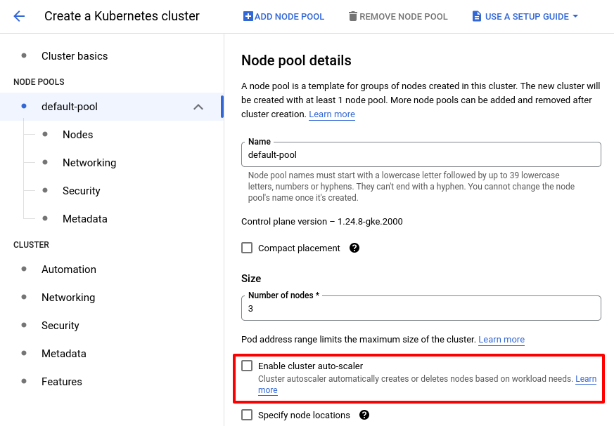
Problem
If you want to tweak this cluster-autoscaler e.g., change some flag) or deploy your own image of cluster-autoscaler (which I wanted to do to test https://github.com/kubernetes/autoscaler/pull/5419), it’s hard to do (StackOverflow question around this). You can tweak some parameters of the GKE deployed cluster-autoscaler but it’s quite limited. You can’t access the cluster-autoscaler deployment as a user using kubectl get deployment cluster-autoscaler -nkube-system. GKE hides it from you.
How do you tweak cluster-autoscaler on GKE?
Solution
One of the ways to solve this problem is to disable GKE cluster-autoscaler while creating the cluster and deploy your own cluster-autoscaler. Here’s a step-by-step guide to to do that:
1. Create a cluster without GKE cluster-autoscaler
Refer to this guide to create a Standard GKE cluster (please create the cluster after reading this section completely). When you are configuring nodepools in NODE POOLS section, don’t enable cluster-autscaler.
Make sure you check Enable Workload Identity (more info here; We need this later)
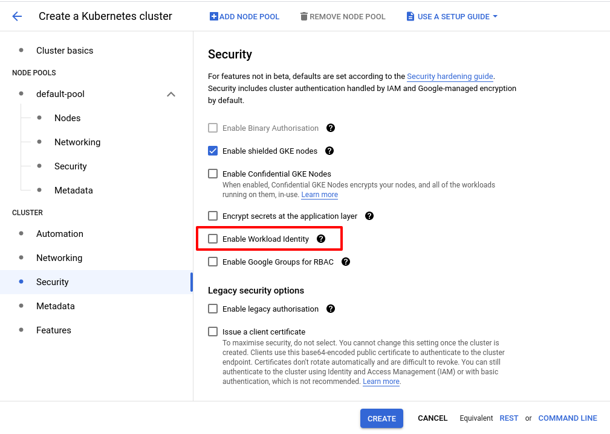
2. Check GKE cluster-autoscaler has not been enabled
Here’s my cluster for example: 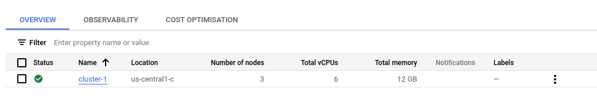 Connect to your cluster (if you don’t know how, check the official guide).
|
|
autoscaling is empty which means GKE cluster-autoscaler is disabled.
3. Add permissions for cluster-autoscaler to manage Instance Groups
(I like to think of Instance Groups as AWS AutoScalingGroups in GCP world.)
To let cluster-autoscaler scale the nodes, we need to give it permission to manage Instance Groups.
1. Create a new GCP Service Account for cluster-autoscaler
Refer the official docs for detailed instructions.
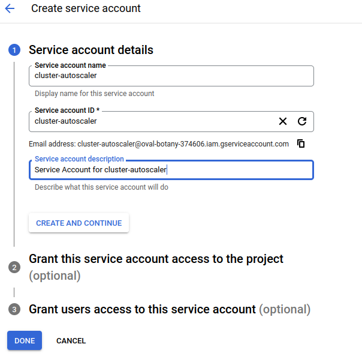
You can skip (2) and (3) and directly click DONE button.
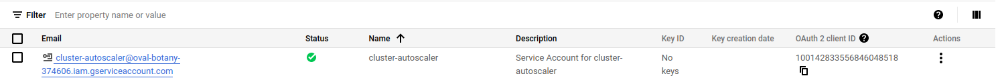
2. Attach an IAM role to your GCP Service Account
I will be using Compute Instance Admin (v1) role which might not be the best role.
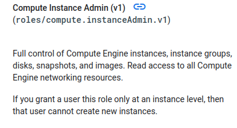
Ref: https://cloud.google.com/iam/docs/understanding-roles#compute.instanceAdmin.v1
You can define your own role for granular control by adding a new role 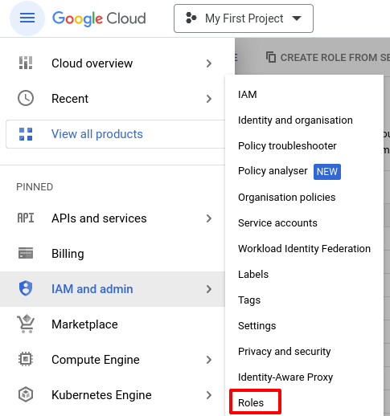
Click on CREATE ROLE:
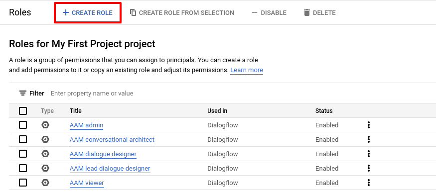
Define your role:
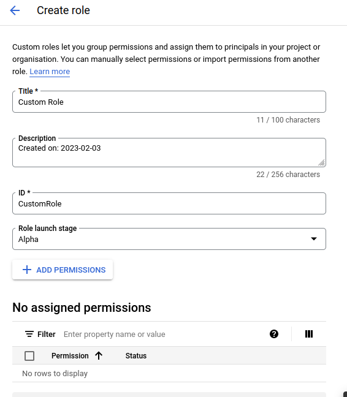
Once the role is created/decided we need to link it to the IAM Service Account. To do this, go to IAM and admin -> IAM
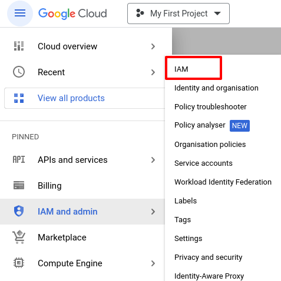
Click on GRANT ACCESS
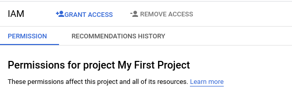
Select our Service Account from the drop-down list
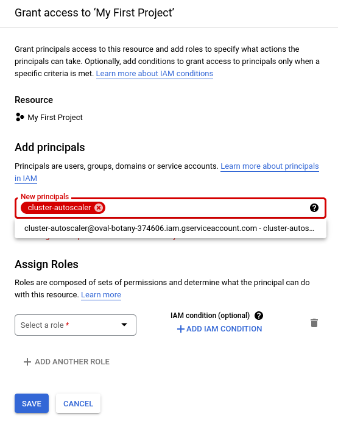
And assign the role
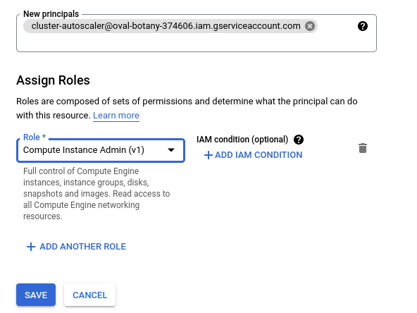
Click on SAVE.
Our GCP Service Account now has permissions to manage Instance Groups.
3. Deploy ResourceQuota resource
|
|
Think of ResourceQuota as per-namespace limits on pod creation. Refer to the official docs for more info: https://v1-24.docs.kubernetes.io/docs/concepts/policy/resource-quotas/
Why are we talking about this?
cluster-autoscaler Deployment uses system-cluster-critical PriorityClass (ref).
If you deploy cluster-autoscaler in non-kube-system namespace you will see cluster-autoscaler ReplicaSet unable to create the pods
|
|
GKE by default creates gcp-critical-pods ResourceQuota for kube-system namespace and gke-resource-quotas ResourceQuota for all other namespaces.
A set of resource quotas is automatically applied to clusters with 100 nodes or fewer and to namespaces on those clusters. These quotas, which cannot be removed, protect the cluster’s control plane from instability caused by potential bugs in applications deployed to the cluster.
https://cloud.google.com/kubernetes-engine/quotas#resource_quotas
|
|
Looking at gcp-critical-pods ResourceQuota,
|
|
As you can see, gcp-critical-pods ResourceQuota places a hard limit of 10 pods for pods using system-node-critical and system-cluster-critical PriorityClass. Since the quota isn’t filled up yet (used is 9 pods), we won’t see any problems in kube-system namespace if we deploy our cluster-autoscaler there. The only problem is, we can’t deploy our cluster-autoscaler in kube-system namespace (I will get to the why in a moment).
Now, if we look at the gke-resource-quotas in a non-kube-system namespace e.g., default namespace
ResourceQuota in the default namespace
|
|
Notice the hard limit on pods (spec.hard.pods) is 1500 and the current status.used.pods is 0. Why are we not able to create new cluster-autoscaler pods?
I think it’s because GKE sets a limit on Priority Class consumption for certain Priority Classes. What does that mean?
It may be desired that pods at a particular priority, eg. “cluster-services”, should be allowed in a namespace, if and only if, a matching quota object exists.
With this mechanism, operators are able to restrict usage of certain high priority classes to a limited number of namespaces and not every namespace will be able to consume these priority classes by default.
Because we can’t rely on the gke-resource-quotas ResourceQuota for cluster-autoscaler, we have to create our own.
|
|
Save the above yaml in a file and kubectl apply -f <file>.yaml.
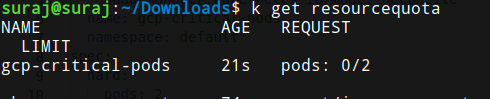
4. Deploy your own cluster-autoscaler
4.1. Before Installing
To install the chart we first need to add the helm repo:
|
|
ref: https://artifacthub.io/packages/helm/cluster-autoscaler/cluster-autoscaler/9.25.0#tl-dr
To check all the available chart versions, do
|
|
APP VERSION above is the Kubernetes version supported by the chart.
|
|
Since I am on 1.24.x version of Kubernetes, I will be installing 9.25.0 version of the helm chart.
We can install the chart in any namespace as long as it’s not kube-system. Why? If you deploy the chart in kube-system namespace you will see the following issue when you check your cluster-autoscaler pod logs:
|
|
More info: https://github.com/kubernetes/autoscaler/issues/5277
4.2. Install the chart
|
|
ref1: https://artifacthub.io/packages/helm/cluster-autoscaler/cluster-autoscaler/9.25.0#gce
ref2: https://artifacthub.io/packages/helm/cluster-autoscaler/cluster-autoscaler/9.25.0?modal=values&path=rbac.serviceAccount.annotations
your-ig-prefix is the prefix of Instance Groups you want to let cluster-autoscaler manage. If you want to target all the Instance Groups, you can specify a short prefix like gke-<your-cluster-name>. For example, in my case since I created a cluster called cluster-1, it would be gke-cluster-1.
Note that autoscalingGroupsnamePrefix is an array because you can specify multiple Instance Groups to match using multiple prefixes (check line 74 to 78 here). In the above command we are only specifying one prefix to match all the nodepools.
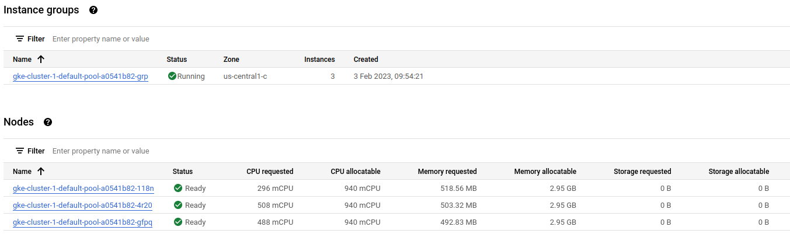
4.3. Create Kubernetes Service Account to GCP IAM Service Account binding
Allow the Kubernetes service account to impersonate the IAM service account by adding an IAM policy binding between the two service accounts. This binding allows the Kubernetes service account to act as the IAM service account.
https://cloud.google.com/kubernetes-engine/docs/how-to/workload-identity#authenticating_to
We have to link our Kubernetes Service Account with GCP IAM Service Account binding. The command looks like this:
|
|
To find out your cluster-autoscaler’s Kubernetes Service Account,
|
|
Replace custom-ca-gce-cluster-autoscaler-5989f4d65c-trbmm with name of your cluster-autoscaler pod.
Let’s say if the GCP project ID is my-project-123456, GCP Service account is cluster-autoscaler@my-project-123456.iam.gserviceaccount.com, Kubernetes Service Account is in the default namespace and it is called custom-ca-gce-cluster-autoscaler you can do:
|
|
4.4. Use the GCP Service Account in Kubernetes
Go to IAM and admin -> Service accounts
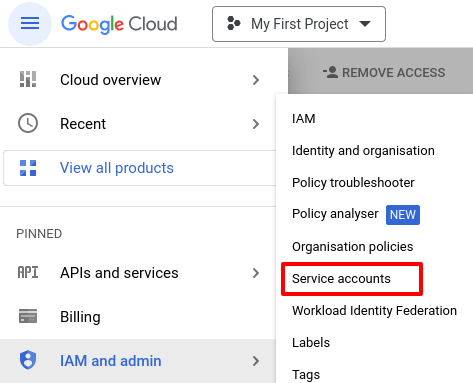
Click on our Service Account
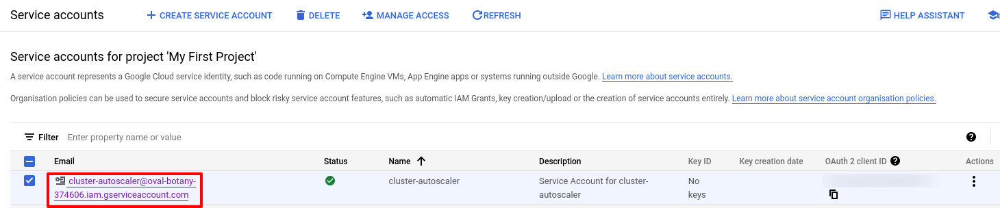
Note that GCP doesn’t recommend downloading Service Account json:
Service account keys could pose a security risk if compromised. We recommend that you avoid downloading service account keys and instead use the Workload Identity Federation. You can learn more about the best way to authenticate service accounts on Google Cloud here.
To use the Service Account, we have to add the following annotation to the Kubernetes Service Account for our cluster-autoscaler:
|
|
Ref: https://cloud.google.com/kubernetes-engine/docs/how-to/workload-identity#authenticating_to
For example,
|
|
You should start seeing your cluster-autoscaler pod running 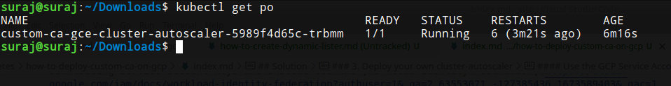
Conclusion
That’s all. If you have any sort of constructive feedback for me, feel free to mail me at surajrbanakar@gmail.com.